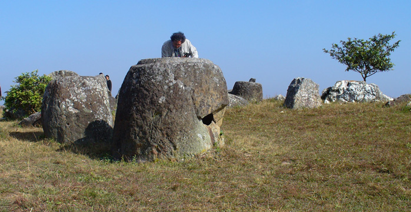
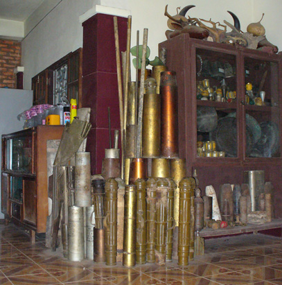

November 25, 2005
Hi Folks,
 The "Plain of Jars" refers to an area where many hundreds of prehistoric jars, weighing up to 6 tons each, were carved from solid stone. The origin and use of these jars is still somewhat of a mystery, but recently most favor the explanation that the larger jars were used primarily for burial purposes, while additional evidence indicates the smaller jars were used for storing commodities such as rice. The jars are grouped in several sites; It takes 20 to 30 minutes to drive from one site to another. Although each site charges an admission fee, we went to all three open sites because none of us felt we would be back in these parts.

The tourists in the photo above help demonstrate just how large many of these jars are. Shapes varied from oval, to circular, oblong, to rectangular. Some jars are flat on top, while others have a ridge cut into the top. A few stone lids can still be found near some of the jars, but one must speculate that such lids are more portable than the massive jars, and must have represented easily found construction material for the centuries of humans living in the area since the original stone masons. It is possible that most jars once had lids.
Touring this area adds a travel dimension most of us never experience: Stay on the path or you may set off a bomb. An ordnance removal team has installed markers showing where it has and has not used sub-surface detectors for locating, and destroying unexploded devices. Many people, especially children, still lose life or limb each year in Laos, over 30 years after the end of the secret war. To these families, the terror of war has yet to end.
Each jar site has a sign (left) revealing the ordnance removal statistics. The two photos below show the valley portion of site one. Most of the "boulders" you see in the distance are actually jars in various states of deterioration.
Several of the guest houses in the closest town, Phonsavan, display collections of ordnance scrap, as shown further down the page. The concluding paragraph then shares some of my feelings.

For those interested in hearing one perspective on American involvement in Southeast Asia, read on. But be forewarned this is a political stance, and if you don't want to read it, you can skip to the next page by clicking here: Si Phan Don (4000 Islands)
Here's an emotional sight. Each red dot on the map to the right represents a bomb drop; the faint pink cross hatched areass represents additional carpet bomb drops, all right here, in the Phonsavan area of Xieng Khuang Province, Laos. There are still a few craters where nothing grows, in what used to be fertile farm land, in a climate that supports two crops per year. Then "we" were fighting for the "Domino Theory," a belief that if one country fell to the communists, eventually all Asia would be forced to do likewise. My Trav-E-Log is not a political platform, but what I see in this part of the world bares no resemblance to what my government told us for years and years. These are the kindest, gentlest people I have ever met. It embarrasses me to think Americans were duped in the 60's and '70s into believing Laotians were "War Mongers" as a way to repeatedly bomb every square inch of the countryside, and deliver huge profits to the so-called "Defense Industry". In retrospect, it should be called the "Offensive Industry", when you consider 99.99% of all our weapons are used outside of U.S. territory. Before we return to more pleasant things, one last statistic. The math for one planeload of bombs every 8 minutes for 9 years =
9 x 365 x 24 x 60/8 = 591,300 planeloads of bombs dropped in Laos. Cost to US taxpayers = 6.57 billion dollars.
Hope all is well!
Bill
=================================
"Travel is Fatal to Bigotry, Prejudice, and Narrow-minded ness" ....
attributed to Mark Twain